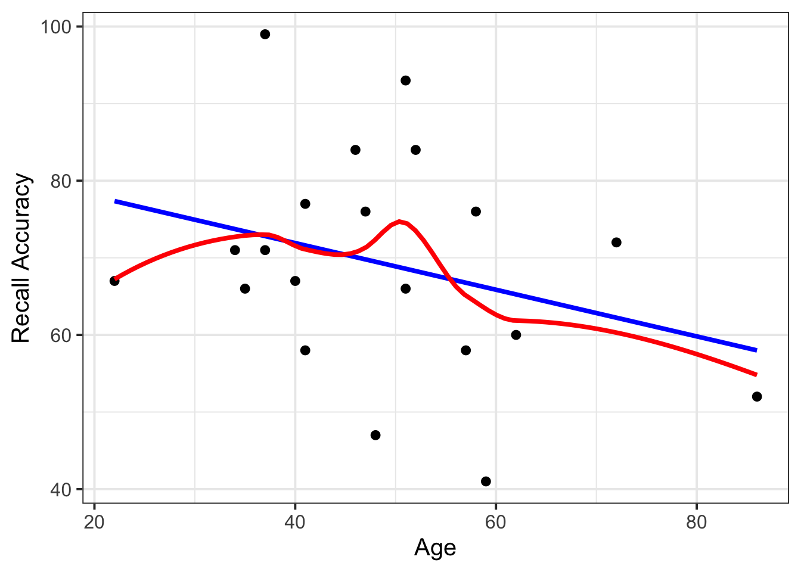
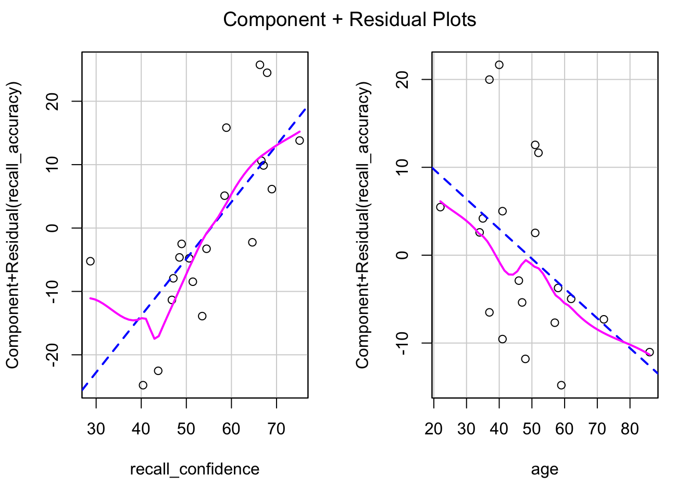
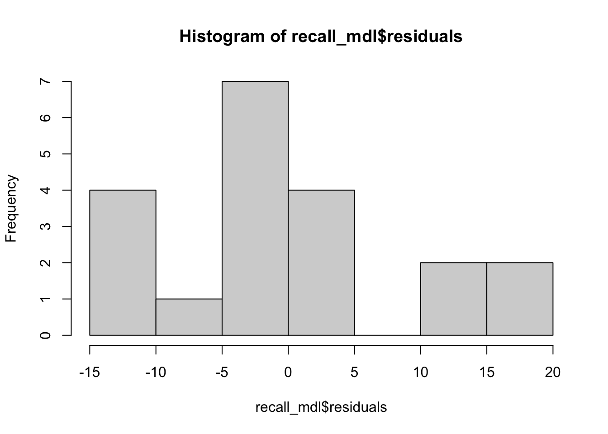
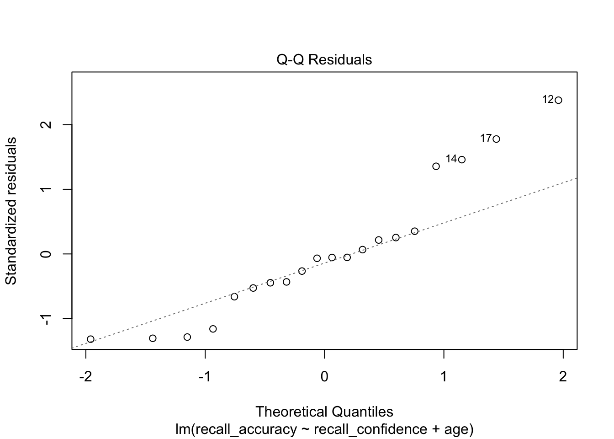
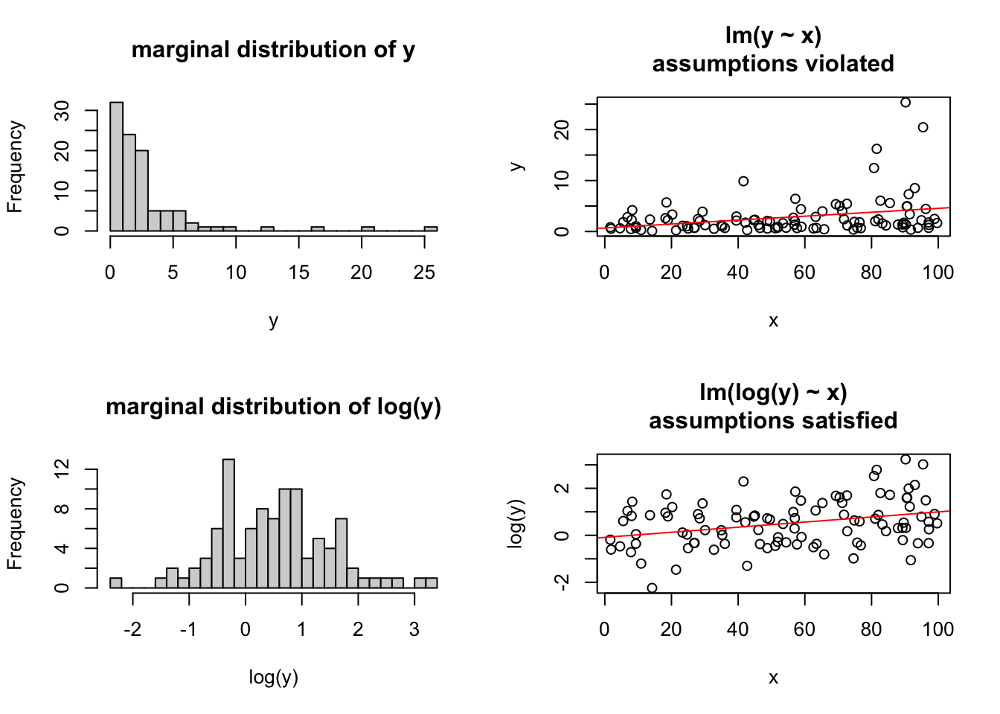
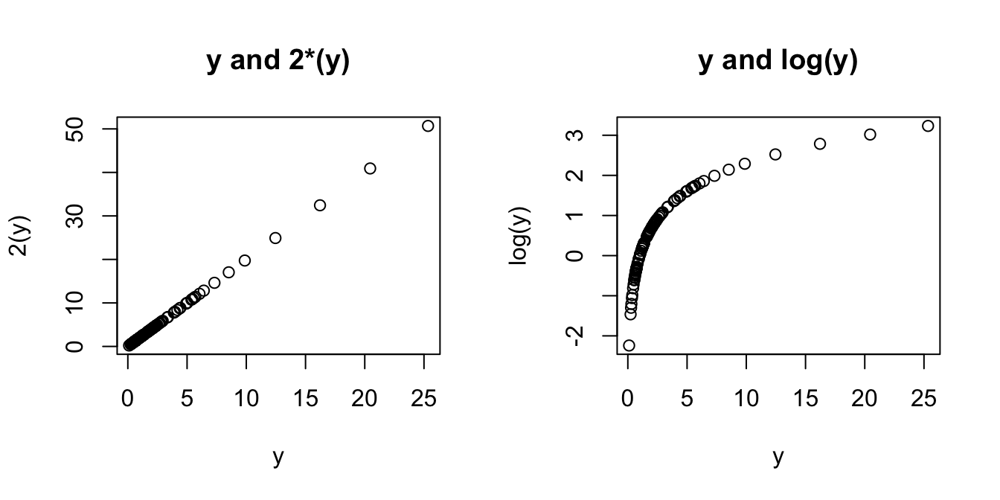
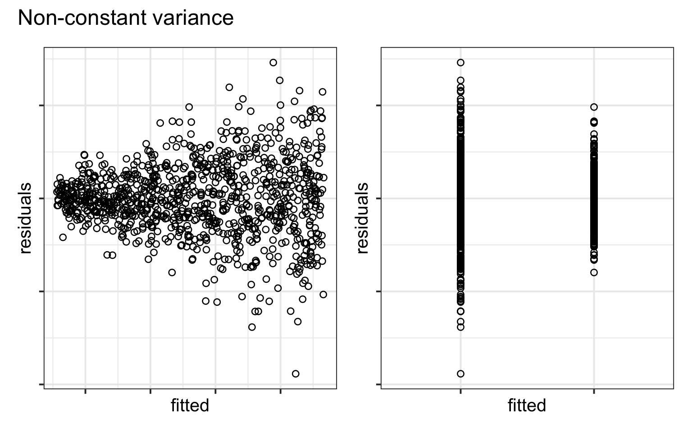
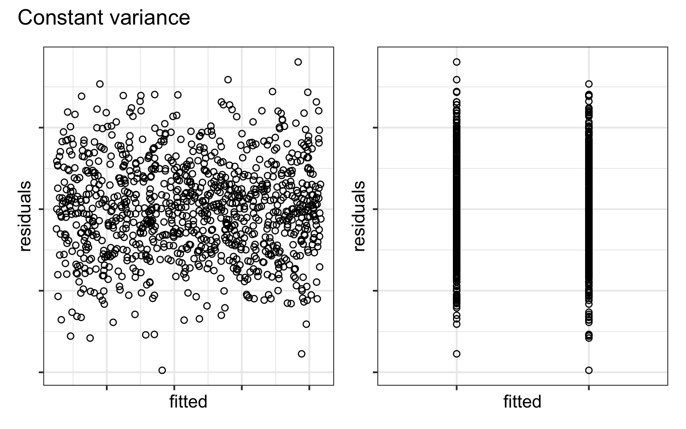
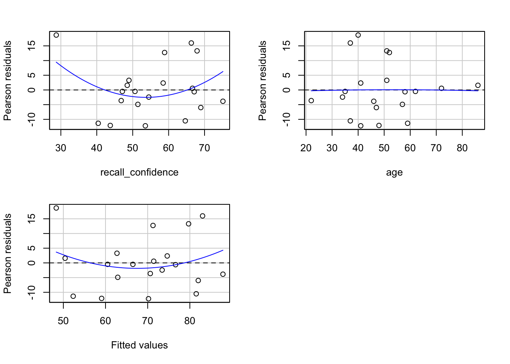
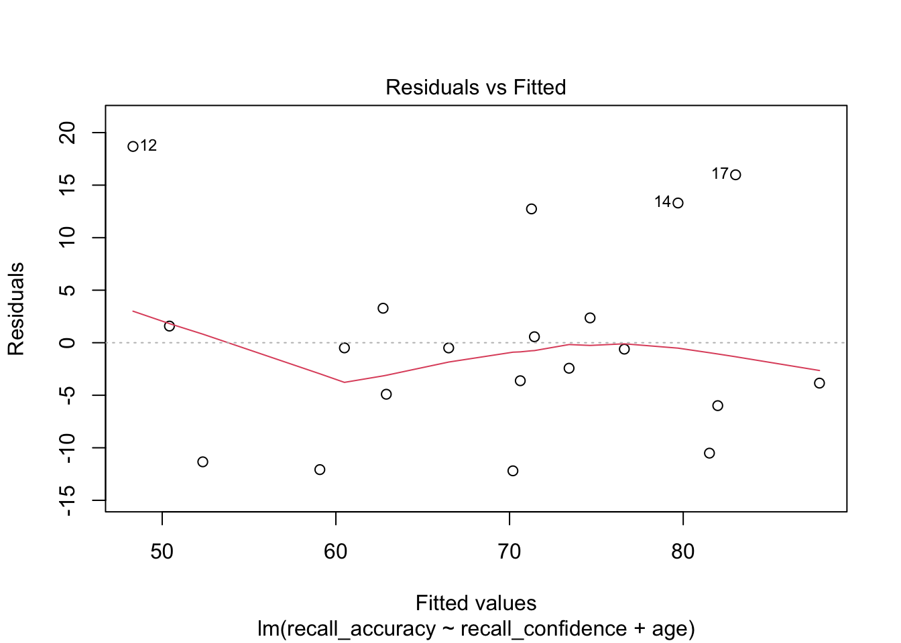

recalldata <- read_csv('https://uoepsy.github.io/data/recalldata.csv')LM assumptions
Why do models make assumptions?
We can think of a linear model as a way to describe the process of how our data was generated.
Models are simplifications of processes going on in the world. In order to simplify these processes, a model will specify or “hard-code” certain aspects of the data generating process, and those aspects cannot be changed. Unchangeable aspects of a model’s data generating process are what we call “assumptions”.
Assumptions are not like significance tests: it’s not the case that the assumption is either “accepted” or “rejected”. The decision process is blurrier than that. When evaluating a model’s assumptions, we are asking ourselves: Are we satisfied that the unchangeable aspects of the model are reasonable enough simplifications, so that the model will still give us reasonable parameter estimates?
An acronym for the four assumptions a linear model makes is “LINE”.
L = Linearity of association
- A linear model can only model associations between predictor and outcome in terms of a straight line. Within the basic linear model machinery, this cannot be changed, and we just have to accept it. That’s what it means to be an “assumption”.
- If an association doesn’t follow a straight line, then a linear model cannot accurately capture it.
- Think of predicting height as a function of age, or
height ~ age, for example. Height rises steeply when ages are small and then eventually tapers off (and may even start to decrease in old age!). - If we used a linear model to model
height ~ age, then our model will give us the best straight line it can.
- To be satisfied with a linear model of that data, we have to assume that the best possible straight line is a good representation of the data.
Simple Linear Regression
In simple linear regression with only one explanatory variable, we could assess linearity through a simple scatterplot of the outcome variable against the explanatory. This would allow us to check if the errors have a mean of zero. If this assumption was met, the residuals would appear to be randomly scattered around zero.
The rationale for this is that, once you remove from the data the linear trend, what’s left over in the residuals should not have any trend, i.e. have a mean of zero.
Multiple Regression
In multiple regression, however, it becomes more necessary to rely on diagnostic plots of the model residuals. This is because we need to know whether the relations are linear between the outcome and each predictor after accounting for the other predictors in the model.
In order to assess this, we use partial-residual plots (also known as ‘component-residual plots’). This is a plot with each explanatory variable \(x_j\) on the x-axis, and partial residuals on the y-axis***.
Partial residuals for a predictor \(x_j\) are calculated as: \[ \hat \epsilon + \hat \beta_j x_j \]
In R
#specify model
recall_simp <- lm(recall_accuracy ~ age, data = recalldata)
#create plot
ggplot(recalldata, aes(x = age, y = recall_accuracy)) +
geom_point() +
geom_smooth(method = "lm", se = FALSE, colour = "blue") + #fit straight line to data
geom_smooth(method = "loess", se = FALSE, colour = "red") + #fit loess line to data
labs(x = "Age", y = "Recall Accuracy")
Interpretation Guidance
The loess line should closely follow the data.
We can create these plots for all predictors in the model by using the crPlots() function from the car package:
#specify model
recall_mdl <- lm(recall_accuracy ~ recall_confidence + age, data = recalldata)
#create plots
car::crPlots(recall_mdl)
Interpretation Guidance
You are looking for the pink line to follow a linear trend line (i.e., follow the blue line). In other words, the loess line should closely follow the linear line.
Important to Note for Interaction Models
***When there is an interaction in the model, assessing linearity becomes difficult. In fact, crPlots() will not work. To assess, you can create a residuals-vs-fitted plot.
I = Independence of errors
- A linear model can only model errors as residuals that are independent from one another. Within the basic linear model machinery, this cannot be changed.
- To be satisfied with a simple linear model of our data, we have to assume that independent residuals are a good representation of the data.
- One common source of non-independence are data points that come from the same source (e.g., in repeated-measures data, the same person will contribute multiple observations). In DAPR3, you’ll learn how to deal with this scenario.
The ‘independence of errors’ assumption is the condition that the errors do not have some underlying relationship which is causing them to influence one another.
There are many sources of possible dependence, and often these are issues of study design. For example, we may have groups of observations in our data which we would expect to be related (e.g., multiple trials from the same participant). Our modelling strategy would need to take this into account.
Testing for the independence of errors can be pretty difficult, unless you know the potential source of correlation between cases (more on this in DAPR3!).
N = Normality of errors
- A linear model can only model errors as residuals that are normally distributed. Within the basic linear model machinery, this cannot be changed.
- To be satisfied with a linear model of our data, we have to assume that normally-distributed residuals are a good representation of the data.
The normality assumption is the condition that the errors \(\epsilon\) are normally distributed in the population.
We can visually assess this condition through histograms, density plots, and quantile-quantile plots (QQplots) of our residuals \(\hat \epsilon\).
hist(recall_mdl$residuals)
plot(recall_mdl, which = 2)
Interpretation Guidance
Remember that departures from a linear trend in QQ plots indicate a lack of normality.
CautionIf violated: transform data
A data transformation involves the replacement of a variable (e.g., \(y\)) by a function of that variable in order to change the shape of a distribution or association (e.g., to help reduce skew). We can transform the outcome variable prior to fitting the model, using something such as log(y) or sqrt(y). This will sometimes allow us to estimate a model for which our assumptions are satisfied.
Some of the most common (not an exhaustive list) transformations are:
- Log (
log(y)): Often used for reducing right skewness. Note, this transformation cannot be applied to zero or negative values (make sure to check your data!) - Square root (
sqrt(y)): Also often used for reducing right skewness. This transformation can be applied to zero values (but not negative), and is commonly applied to count data

The major downside of this is that we are no longer modelling \(y\), but some transformation \(f(y)\) (\(y\) with some function \(f\) applied to it). Interpretation of the coefficients changes accordingly, such that we are no longer talking in terms of changes in y, but changes in \(f(y)\). When the transformation function used is non-linear (see the Right-Hand of Figure 2) a change in \(f(y)\) is not the same for every \(y\).

E = Equal variance of errors
- A linear model can only model errors as residuals that have equal variance. Within the basic linear model machinery, this cannot be changed.
- To be satisfied with a linear model of our data, we have to assume that residuals with equal variance are a good representation of the data.
The equal variances assumption is that the error variance \(\sigma^2\) is constant across values of the predictor(s) \(x_1, \dots, x_k\), and across values of the fitted values \(\hat y\). This sometimes gets termed “Constant” vs “Non-constant” variance. This is presented visually in Figure 3 and Figure 4.


In R
We can create plots of the Pearson residuals against the predicted values \(\hat y\) and against the predictors \(x_1\), … \(x_k\) by using the residualPlots() function from the car package. This function also provides the results of a lack-of-fit test for each of these relationships (note when it is the fitted values \(\hat y\) it gets called “Tukey’s test”).
library(car)
residualPlots(recall_mdl)
Test stat Pr(>|Test stat|)
recall_confidence 1.45 0.17
age -0.05 0.96
Tukey test 0.88 0.38Alternatively, we can use:
plot(recall_mdl, which = 1)
Interpretation Guidance
If the assumption is met, you should see a random scatter of \((x,y)\) points with constant mean and variance functions i.e., the vertical spread of the residuals should roughly be the same everywhere.